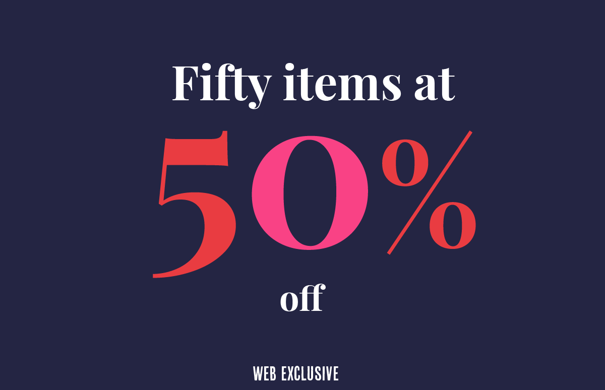
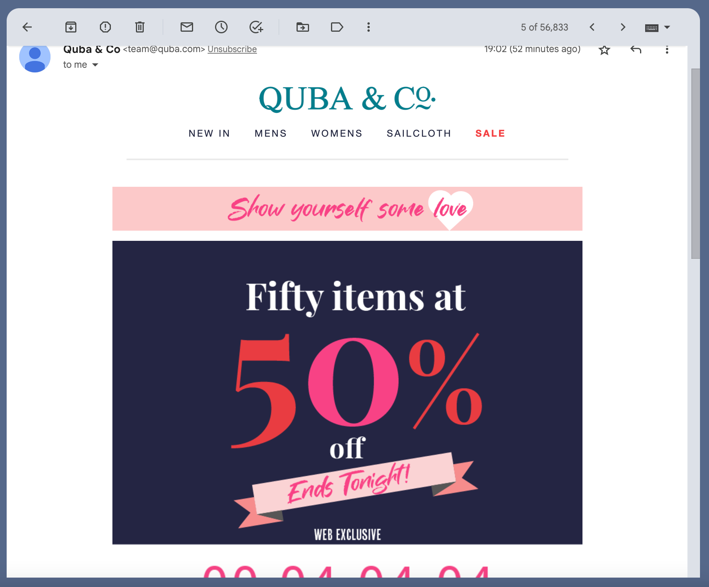
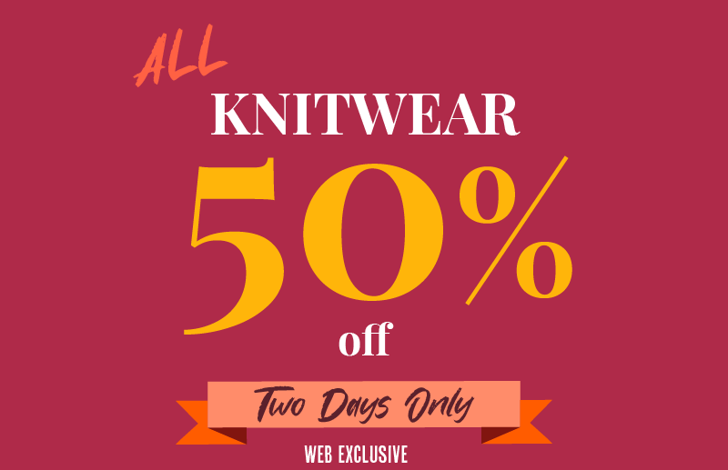
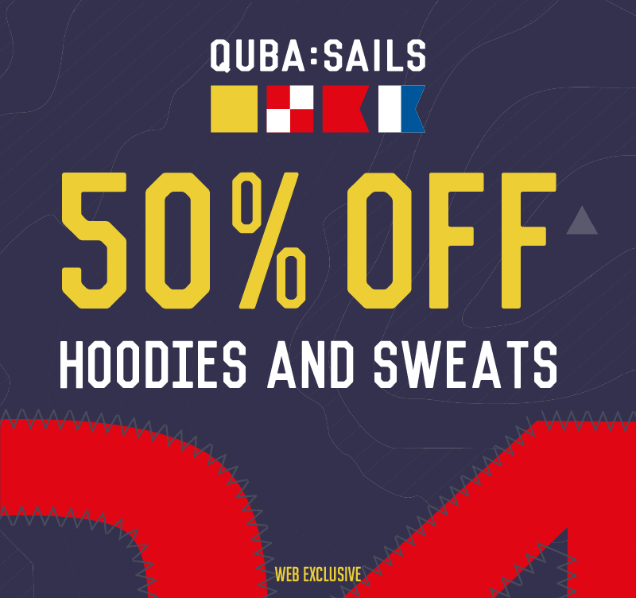
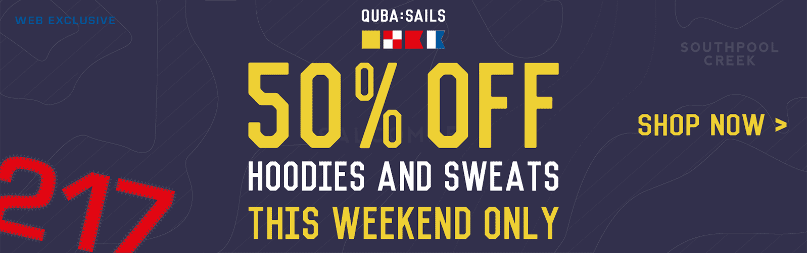
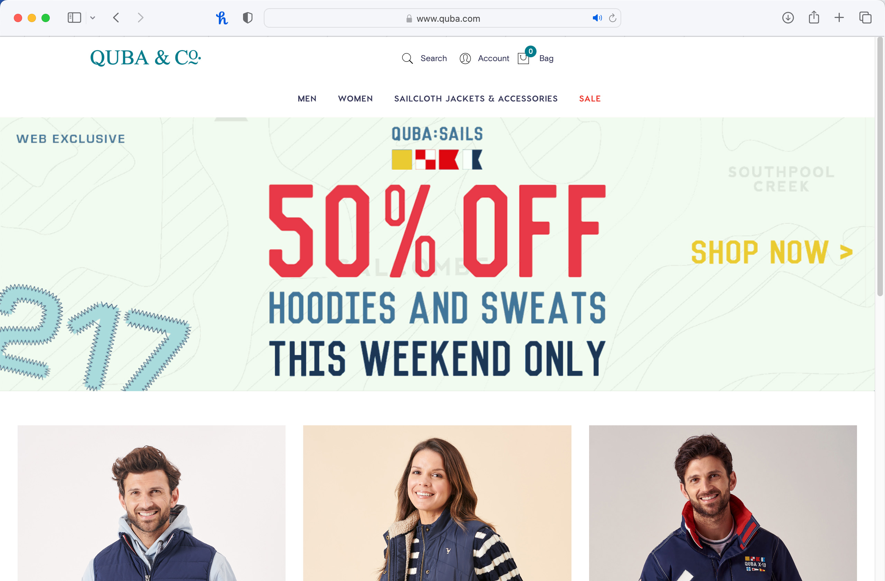
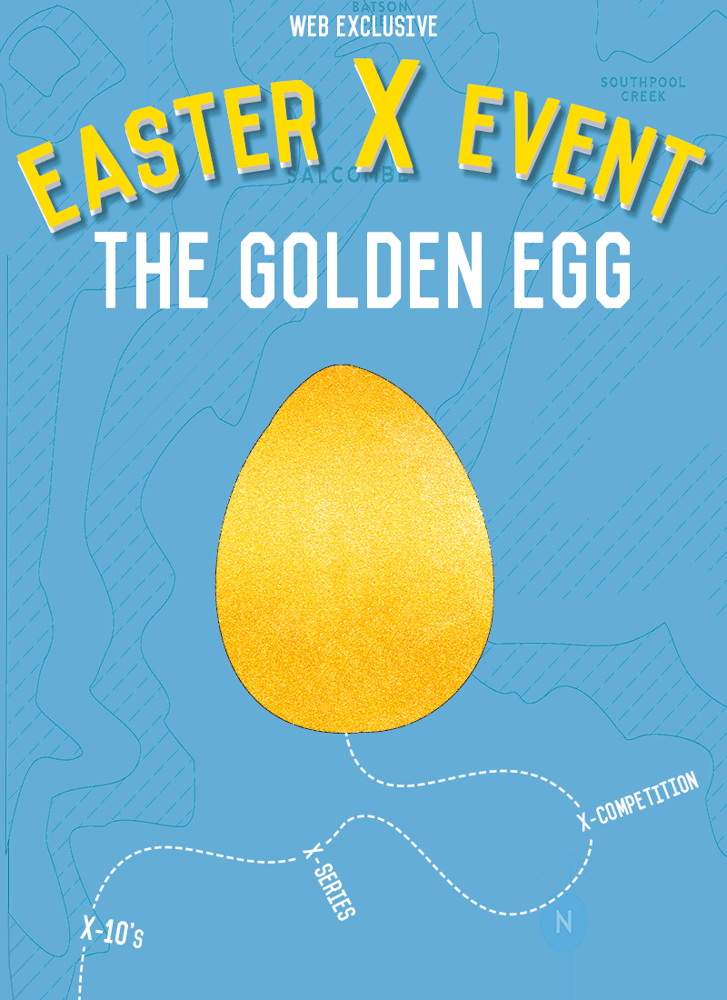

I worked for Quba & Co for 6 months creating new marketing materials.
It was fun change from some companies as they initially didn't show me any previous work (aside from what I'd seen on their website). They asked me to come up with fresh ideas, but with the aim of having as many ideas as possible without getting too attached to any one concept.
One of my simplest but most popular ideas was combining text and numbers for a 50 for 50% sale.

Here you can see it within an email, along with the closing tonight label added.

This inspired other email campaigns including a knitting one.

I also made campaigns inspired by some of their clothes designs. Here using the company's logo colour scheme to inspire the design, along with the numbers sewn in, a feature which appears in many of their clothes, which itself is inspired by the numbers on sail boats. The map in the background was also created from a map that appears on the clothes label tag.

Website banner from the same campaign

It was also reused with different colour schemes

For easter we ran a whole campaign using an egg (playing on the sound of "X") theme, here the final day shows a golden egg that I had fun trying to animating.
